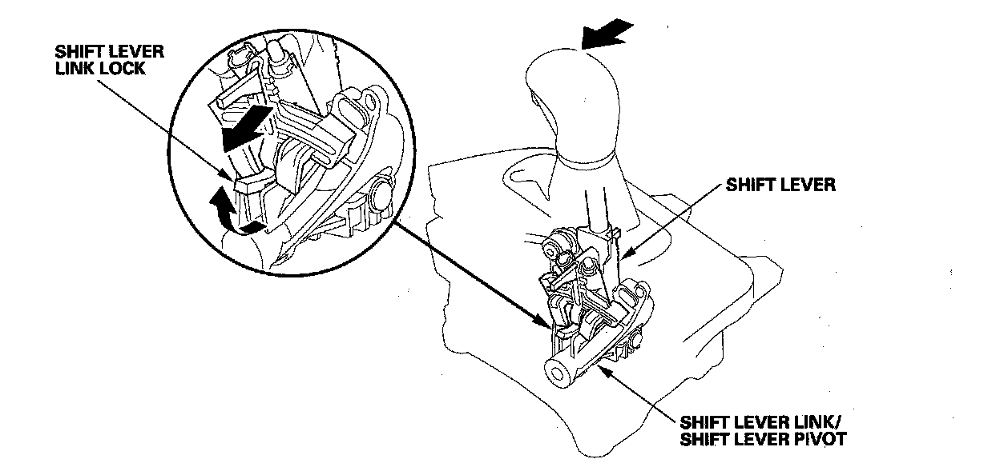

Shift Lever Mechanism
Shift Lever MechanismThe shift lever has five positions; P, R, N, D, and D3 positions. The D position has two modes; automatic shift mode and sequential sportshift mode with the shift lever moved to the M position. The shift lever shifts out of the P position and into the R position with pressing the shift lever button, and the shift lever shifts into the D3 position from the D with pressing the shift lever button. The shift lever is engaged with the shift lever link in the P, R, N, D, and D3 positions. This unit shifts the transmission using the shift cable connected between the shift lever link and the transmission control shaft.
In the M position, the shift lever is disengaged from the shift lever link, and the shift lever can be used to shift gears manually between 1st though 5th, much like a manual transmission.
Shift Lever Mechanism in M Position
When the shift lever shifts to the M position, the shift lever is disengaged from the shift lever link/shift lever pivot, and the shift lever link lock pops up to engage with the shift lever bracket base; the shift lever link and shifting position in the transmission are held in the D position. The shift lever link lock is spring loaded, it pops up in the M position, and does not engage the shift lever link in any position except M.

The shift lever fits into the M position by using a detent plunger with a spring. When shifting to, upshift and downshift position, the detent plunger is depressed by the detent bracket wall, and detent plunger spring puts the shift lever back into the neutral position. The detent plunger also works in the P position.